NEWS
Xu Qiu Cheng 徐秋成（ジョ・チウチェン）
メディアアーティスト、舞台俳優。東京藝術大学美術学部先端芸術表現科 教育研究助手。アウトサイダーの記憶、ポストメモリー、夢と睡眠、仮想空間と死後の世界、社会的に規制されたシステムとしての身体をテーマに、映像インスタレーション、ゲームエンジンを用いた作品、舞台パフォーマンスを横断して制作を行う。 Media artist and stage performer based in Tokyo. His practice spans video installation, game-engine-based work, and stage performance, exploring outsider memory, postmemory, dreams and sleep, virtual space and the afterlife, and the body as a socially regulated system.
経歴
受賞歴
展示
出演作品
Contact
PRESS
RIPPLES: The Great Earthquake – 200 Years Later さざ波：200年後の大地震
この映像作品は「ポストメモリー」をテーマに、ゲームエンジンを用いて制作した。 映像は、日本の「国生み」神話から始まり、人類の宇宙移住、地球外生命体への進化へと至る。そして物語は終盤から、過去へ遡るように、地球外生命体となった人類の末裔たちが、初めてこの星に降り立った祖先の神話を手がかりに、かつての地球を想像し、高度なテクノロジーによってその世界をシミュレートしようとする。その二つの時間軸の交差点に、「私」が存在している。
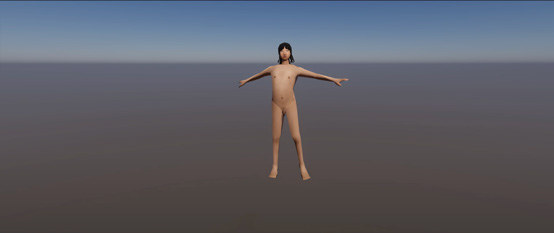
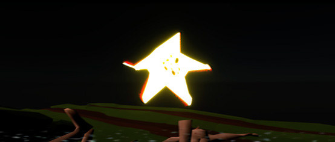
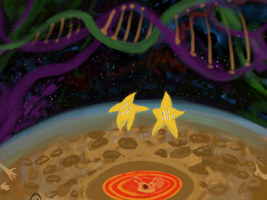
ペイル・ブルー・ドット Pale Blue Dot
東京藝術大学の G7「世界平和」をテーマにして制作した映像作品。ゲームエンジンを用いて、デジタル世界で自分のアバターが銃殺され、魂が宇宙に漂うという死の体験をシミュレートした。 『ペイル・ブルー・ドット』は、薄暗い青色の点を指し、これは地球から最も遠くの場所から撮影された地球の写真である。写真の中で、地球は暗闇の宇宙に浮かぶひとつの小さな粒にすぎない。 普段、慣習となって、もはや意識しようもない、何らかの「儀礼」によって記憶が抑圧される。よそものになってしまうことが多い。自分に真摯に向き合うことで、自分自身を感じることができる。その気持ちは、初めてペイル・ブルー・ドットの写真を見たときを思い出した。
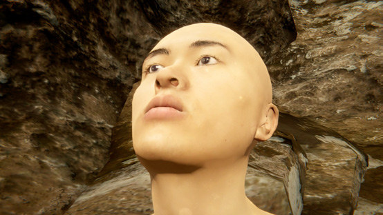
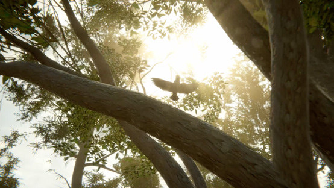
夢をみる、さいたま（仮） Dreaming, Saitama
生活都市、ベッドタウンにおいて、最も重要なのは睡眠であること。 人間が睡眠のなかで夢を見てる時が一番自由が感じられると言われ、日常からかけ離れた大胆かつ不思議なイメージが溢れ出す。それは現実だけではなく、歴史や記憶、民話から影響を受けている。 本作は睡眠の深さによって、4 段階に分けられる。それぞれの段階とさいたまを代表とする盆栽、人形、漫画、鉄道を結びつけ、夢のなかにしかない面白さや大胆さを表現する。
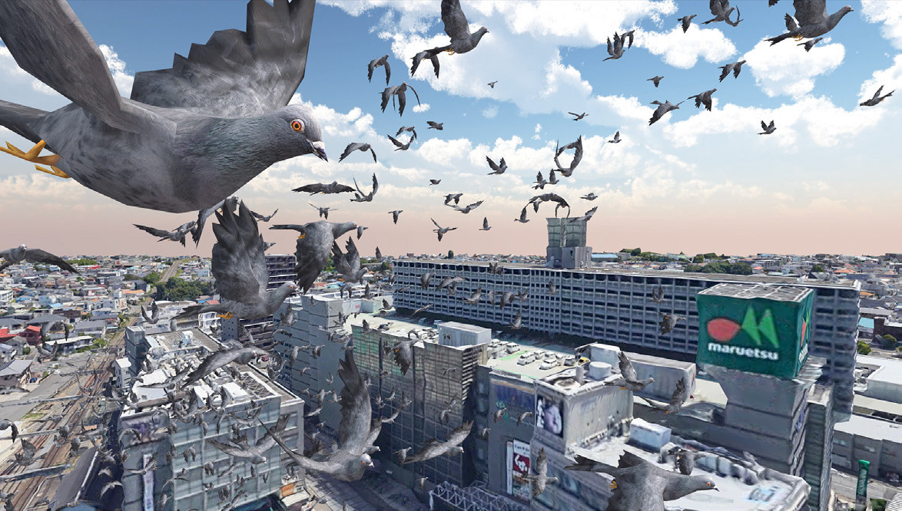
宇宙船イン・ビトゥイーン号の窓 The Window of Spaceship 'In-Between'
日本語を母語としない俳優との創作がひらく「演劇と言語」の未来。いくつものリアリティが交差する、まだ見ぬ SF 演劇。 重大なミッションを果たすべく、イン・ビトゥイーン号が、四人の乗組員と一体のアンドロイドを載せて、宇宙を漂泊しています―― 『宇宙船イン・ビトゥイーン号の窓』は、「日本語を母語としない俳優が日本語で演じる演劇」と聞いて多くの人がイメージするとおぼしきもの、とはおよそ異なるすがた・かたち・はたらきを備えた演劇作品です。（岡田利規、ホームページより）
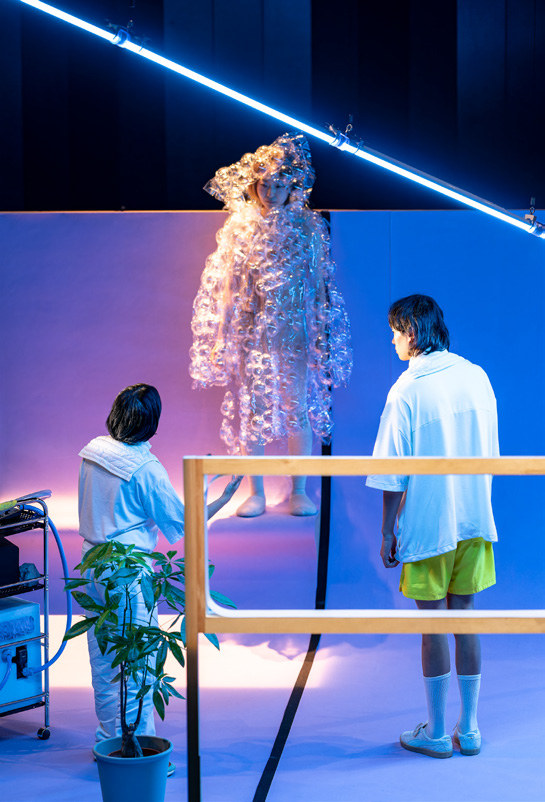
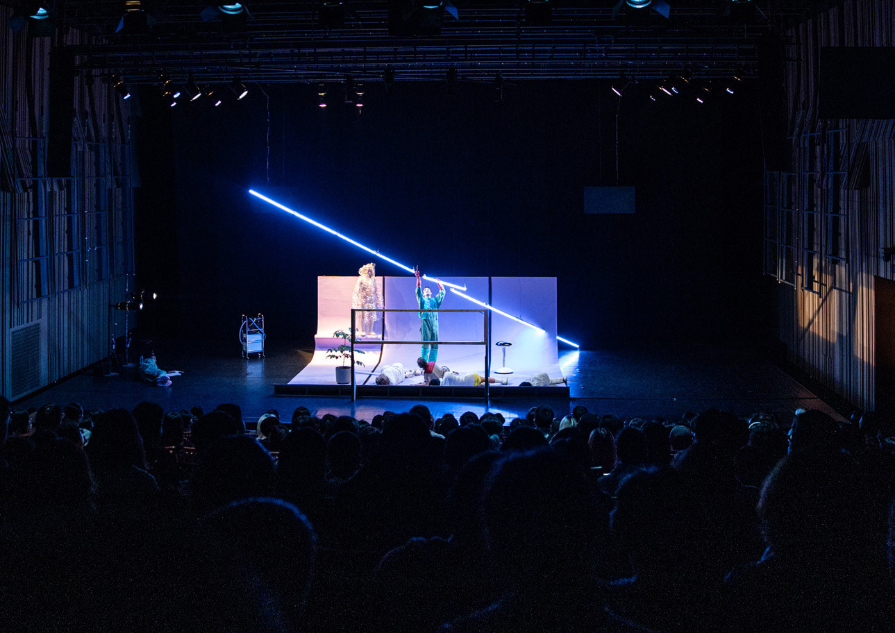
燃える心 Burning with Heart
この作品は私が記録した沢山の夢からいくつか印象深いシーンをピックアップして、一つの映像を制作しました。 夢のなかにあるビジョンを逆算し、目覚めているときに隠した切実な願望や不安の背後に潜んだ原因は一体なんなんだろうと考えながら、自分の心の中にあるモヤモヤしたことを分析しようと思いました。 タイトル《燃える心》はソビエトのゴーリキー『イゼルギリ婆さん』の挿話からインスパイアされたものです。他の人を助けようという願望とできないという現実の結果である自己犠牲の複雑な心境を表現したかったのです。
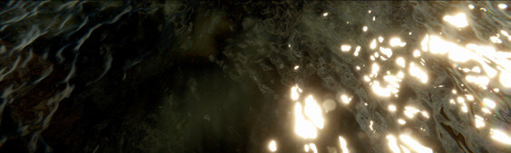
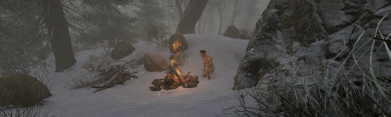
イノシシの心
“ 私が寝ている間に、一匹のイノシシが私の胸を裂いて、飛び出した。” 魂呼ばいとは、死の前後に行う招魂呪術だ。解離性障害とは、現代精神疾患の一つであり、意識や記憶などに関する感覚をまとめる能力が一時的に失われた状態だ。日常における解離状態も沢山ある。つまり、自己の通常の状態から離脱を契機とする。 寝ている間に体から出てきた魂が、自分の頭にあった記憶の世界で走り回って、一つ一つの断片が何かによって整理され、繋げられ、夢となった。夢は記憶であり、自分の心の中にある動機に基づいて、記憶に意味を見出し、整理しようとすることしかできない。その漠然とした夢を再現しようと思い、この作品を作った。
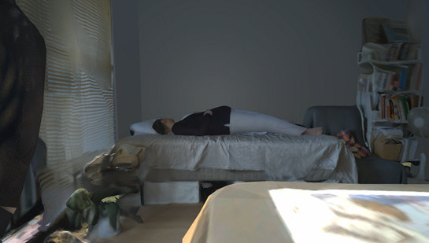
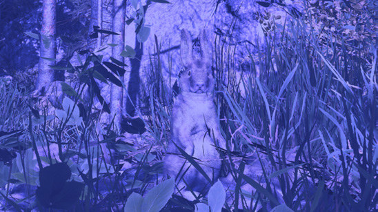
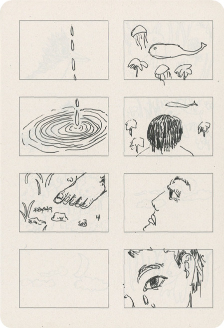
身体と音声によるパフォーマンス
本作は、山川冬樹先生のパフォーマンスアートの授業で、私が地元の方言から抽出した音節の音と、地元のおばあちゃんたちが喧嘩する時の体の振る舞いから抽出した姿勢の関係性について作った作品。私は 17 歳までずっと田舎に住んでいて、方言しか話さない生活を送っていた。北京に行ったとき、標準中国語さえ話せなかったため、言葉の中に潜んでいる権力性や暴力性を感じた。 中国の SNS では、農村のおばあちゃんたちが喧嘩する時の体の振る舞いの動画が流行った時期があった。それを見ながら、大笑いする人がたくさんいるが、私は子供の頃から街中でおばあちゃんたちが喧嘩する風景をよく目にしてきた。実はそれは悲しいことなのだ。農村の女性は常に多重の抑圧を受けているが、自分の怒りを表すことは難しく、自分が無意識に自分を叩く、ある意味の自傷行為でもある。 私は標準語が話せないため、差別を受けたことがある。標準語が良いと言われているが、私は方言の中に意思がない本能的な音節のようなものは、とても原始的な力が感じられ、感情の起伏もはっきりしていた。怖いと思う人もいるが、私はスッキリとした気持ちになり、このパフォーマンスをした。
黄泉の旅
“ 死に対する印象は人間が生まれる前に子宮にいた頃の記憶でしょうか ” 私がよくみた夢の一つは、色や形がないため、とても柔らかく、薄い明るい色に満たされ、心地よい温度で包まれて、羊水の中にいるような感じの夢である。 中国の古代のお墓の形は、母の胎内（子宮）を意識して作られているとも言われている。子宮から生まれ、子宮に還る、再生を祈るシンボルである。つまり、死後の世界への想像は、生まれる前に子宮にいたときの感覚であるかもしれない。 死に対する解釈には、それぞれの地域の政治や宗教などの社会面も反映されている。副葬品の立体彫刻とゲームエンジンで作った映像を組み合わせることで、生まれる前の世界と死後の世界を繋ぐ。個人の存在とその個人が置かれた環境との関係を探究したいと考え本作品を制作した。
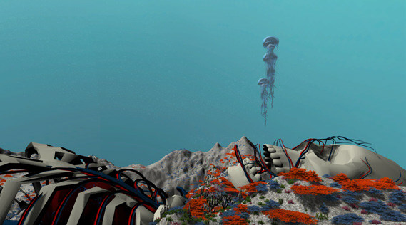
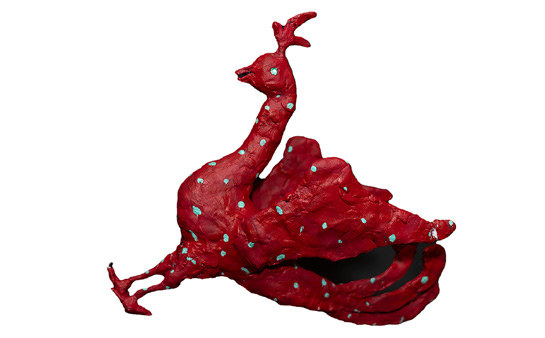
冥銭とビットコイン
“ 葬式を通じて、死後世界への想いから幸せと自由への願いを感じた ” 冥銭とは中華圏の副葬品のひとつであり、金銭、または金銭を模した物のことである。火で燃やされたあと、死後の世界で通用する通貨となって、死者があの世で幸せな人生を送れるようにするために副葬される。ビットコインは、インターネット時代の産物であり、純粋な P2P 電子マネーによって、金融機関を通さない、直接なオンライン取引が可能である。 蝋燭を灯し、爆竹を使い、一連の神秘的な儀式を行うことで死後の世界に冥銭を送るやり方に対し、ビットコインは複雑な暗号技術をベースにしている。これらの 2 つの異なるアプローチは、すなわち、それぞれの時代の特徴とその時代の求めるものを示している。
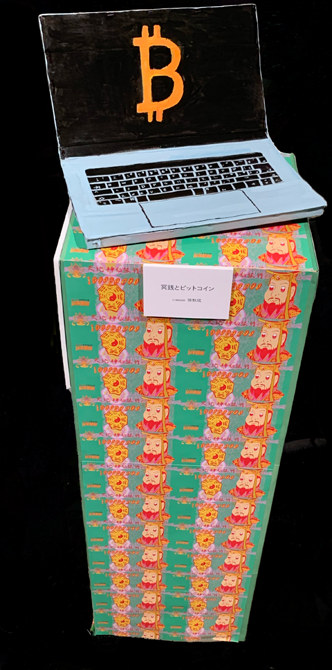
人間が大嫌いなぬいぐるみ Stuffed animals that hate humans
弱い立場にいる人が常に客体化されている。むりやり人間の足を付けられたこのぬいぐるみは、人間のことが嫌いになってしまった。人間に対するトラウマを持つようになり、近寄ると逃げるようになった。 観客の感想： “ 撫でようとすると倒れてでも人間を拒絶するぬいぐるみの姿を見て、なんだか胸が痛くなりました。” “ 本来何も言わずにいつでも人を癒し肯定し従ってくれるはずのぬいぐるみが社会的な弱者に似てると感じ。拒絶反応を見せることによって、己の中にある「自分と言葉が通じない者や自分より弱い者に対して都合のいいように解釈したり、あたかも正当性があるような理屈を並べて何かを強要したり酷く扱ったりすること。」に気づかせる作品だと思います。”
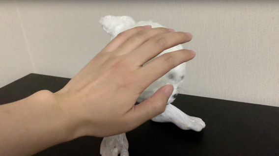
《暁闇の夢》及び子供時代の一連ドローイング
本作品は、無数の夢の瞬間を記録し、その夢を見た原因を絵やドローイング、立体、映像で表現している。 壁に設置された iPhone では、自分が夢みる直前を 30 秒の映像作品にしたものを上映している。自分自身の感覚を表現する試みである。 子供の時見た夢を、今でもたまに見ている。夢の世界で自分の内部に隠れていた、あらゆる抑圧された行為や切実な感情が溢れ出す。それを様々な素材で可視化することで、今の自分がかつていた環境を直視する。
ピクニック
この作品は、私が夏休みに帰国した際に、幼馴染が働いている都市へ行き、一人一人と一緒に数日共同生活をし、彼らの現場を実体験した映像作品だ。 4 つの画面には、同じお菓子を食べている 4 人の幼馴染の映像が流れている。出稼ぎの為に、沿海部の都市に住む 4 人の友人は、それぞれ異なる空間で、同じお菓子を無言で食べ続ける。 中国の経済力や存在感が急速に強くなった一方で、国内の貧富の格差が非常に高まった。その中で、中国の戸籍制度によって、人間が自由に移動することができなく、都市部と農村部の人の収入格差が人為的に作られたと言われた。 私の実感としては、普段の生活で接触する同じ国の人々に格差を強く感じた。私の出身地と同じような農村部出身の労働者だが、安価な労働力として、中国社会には見えないような存在である。 その分裂のなかに、何かが存在していると思いつつ、映像を用いて再びピクニックを行った。
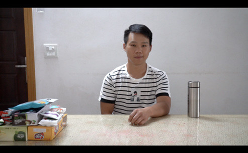